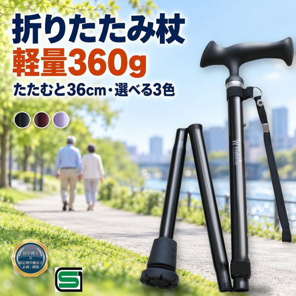
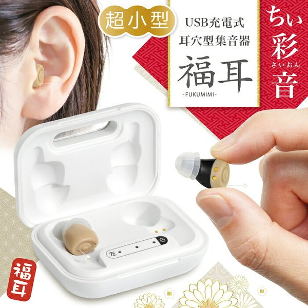
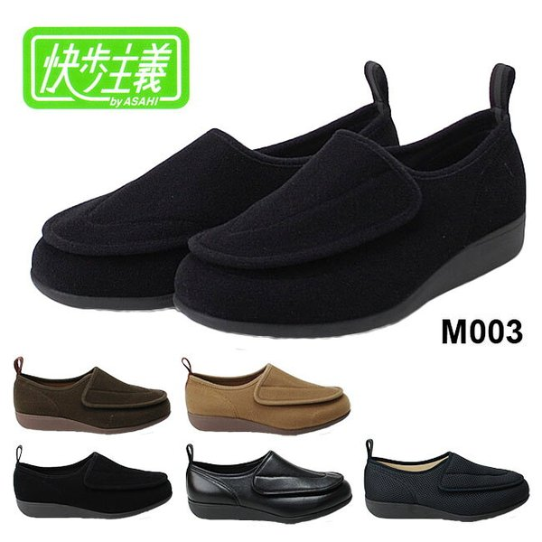
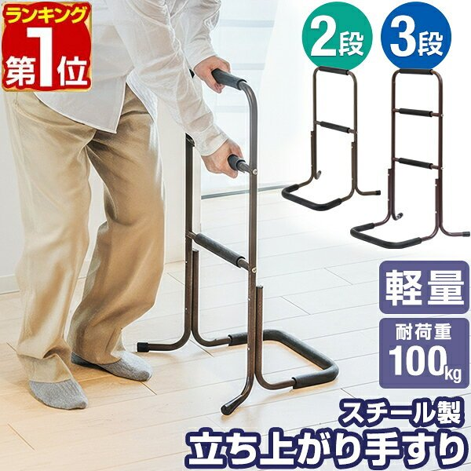
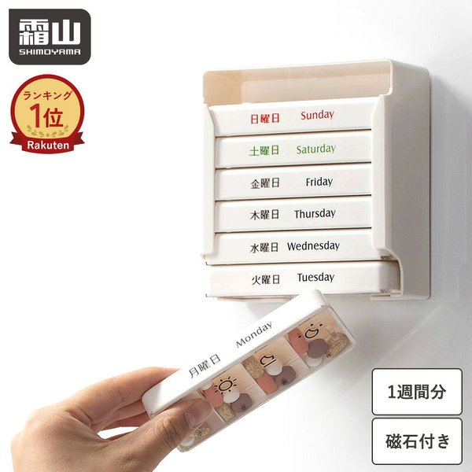
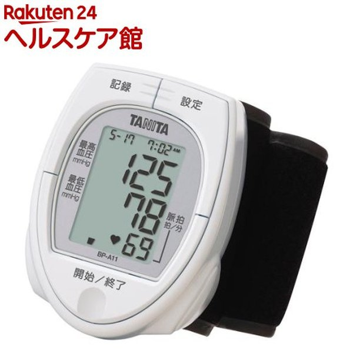
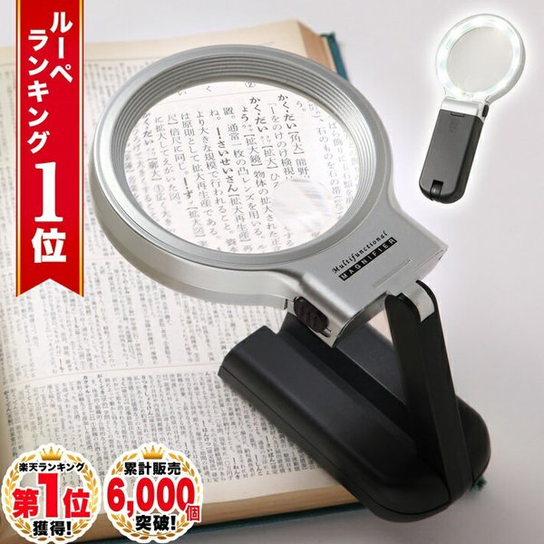
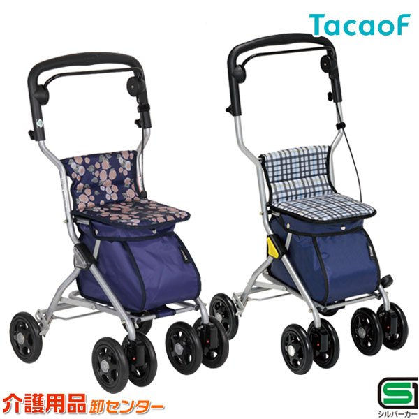
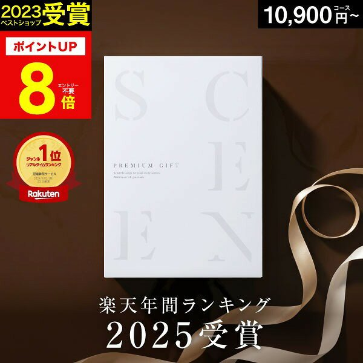
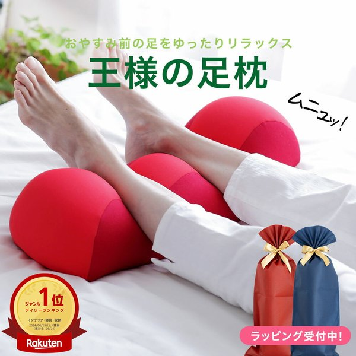

【2026年・シニア＆敬老ギフト10選】折りたたみ杖 SGマーク・集音器 福耳 ちい彩音・アサヒ 快歩主義・置き型 立ち上がり手すり・霜山 ピルケース・タニタ 血圧計・LEDルーペ・幸和製作所 ルミド・カタログギフト SCENE・王様の足枕を実売価格で比較
親や祖父母への贈り物は、本人が言い出しにくい不便を先回りする形が喜ばれます。杖や手すりは「まだ早い」と言われやすいので、日常の動作が少し楽になる道具として渡すと受け取ってもらいやすくなります。
選ぶ軸は3つです。まず体の負担を減らすか。杖は軽さと長さ調整、靴は幅と履きやすさ、手すりは置くだけで使えるかを見ます。次に毎日使うか。薬ケースや血圧計、靴下のように毎日触るものは、使い方が簡単なものが向いています。最後に贈る場面。敬老の日や帰省の手土産なら、カタログギフトや花束のように相手が選べるもの、日用品なら実物を渡すのが喜ばれます。
本記事では、楽天市場で人気・高評価のシニア向け用品・敬老ギフト10選を、実売価格とレビュー評価つきで写真付き紹介します。
- おすすめ10選 スペック・特徴比較表
- BEST 1｜habilis 折りたたみ杖 SGマーク 360g
- BEST 2｜福耳 ちい彩音 集音器 耳穴型
- BEST 3｜アサヒ 快歩主義 コンフォートシューズ スリッポン KS1973
- BEST 4｜置き型 立ち上がり補助手すり 2段・3段
- BEST 5｜霜山 ピルケース 1週間分 曜日付き
- BEST 6｜タニタ 手首式血圧計 BP-A11
- BEST 7｜Phoenix スタンドルーペ LED 3倍・10倍
- BEST 8｜幸和製作所 ルミド SIMD02 シルバーカー
- BEST 9｜カタログギフト SCENE 8コース 1万円
- BEST 10｜王様の足枕 ビーズクッション
- 【読者負担0円】買わなくても得する無料サービス
- まとめ：シニア・敬老ギフト10選の選び方
| 順位 | 商品名 | ブランド | 最大の特徴・おすすめ理由 | 総合評価 |
|---|---|---|---|---|
| BEST 1 | habilis 折りたたみ杖 SGマーク 360g | habilis | 360gと軽く、36cmに折りたためる | 4.62 |
| BEST 2 | 福耳 ちい彩音 集音器 耳穴型 | 福耳（JTT Online） | 片側2gで目立ちにくい | 4.56 |
| BEST 3 | アサヒ 快歩主義 コンフォートシューズ スリッポン KS1973 | アサヒ（快歩主義） | 4E幅広で足を締め付けない | 4.89 |
| BEST 4 | 置き型 立ち上がり補助手すり 2段・3段 | ottostyle.jp | 工事不要で置くだけ | 4.45 |
| BEST 5 | 霜山 ピルケース 1週間分 曜日付き | 霜山 | 1週間分を朝昼晩に分けられる | 4.55 |
| BEST 6 | タニタ 手首式血圧計 BP-A11 | タニタ（TANITA） | 手首に巻くだけで測れる | 4.47 |
| BEST 7 | Phoenix スタンドルーペ LED 3倍・10倍 | Phoenix（フェニックスルーペ） | 3倍と10倍を切り替えて使える | 4.45 |
| BEST 8 | 幸和製作所 ルミド SIMD02 シルバーカー | 幸和製作所（TacaoF） | 押すだけでなく座って休める | 4.66 |
| BEST 9 | カタログギフト SCENE 8コース 1万円 | SCENE（カタログギフト） | 8コースから相手が品を選べる | 4.64 |
| BEST 10 | 王様の足枕 ビーズクッション | 王様 | 足の下に入れるだけで楽になる | 4.60 |
habilis 折りたたみ杖 SGマーク 360g

habilisの折りたたみ杖は、重さ360gのアルミ製です。4つに折りたたむと36cmになり、鞄に入れて持ち歩けます。SGマークを取得していて、長さを6段階で調整できるので、身長に合わせて使えます。楽天市場での実売価格は約3,940円（2026年11月時点）。
- 360gと軽く、36cmに折りたためる
- SGマーク取得で安心して使える
- 長さを6段階で調整できる
- 折りたたみ式は留め具が多いので、使う前に確かめる
福耳 ちい彩音 集音器 耳穴型

福耳のちい彩音は、耳の穴に入れるタイプの集音器です。片側2gと軽く、充電式で、ケースに入れるとそのまま充電できます。音量を5段階で調整でき、イヤーピースが6種類付いているので、耳の形に合わせて選べます。楽天市場での実売価格は約7,980円（2026年11月時点）。
- 片側2gで目立ちにくい
- ケースに入れるだけで充電できる
- イヤーピースが6種類付属
- 耳穴型なので、装着感は耳の形によって変わる
アサヒ 快歩主義 コンフォートシューズ スリッポン KS1973

アサヒの快歩主義のコンフォートシューズです。4Eの幅広設計で、足を入れるだけのスリッポンなので、かがんで紐を結ばずに履けます。日本製で、靴底が反り返るように作られていて、歩くときに足が前に出やすくなります。楽天市場での実売価格は約5,860円（2026年11月時点）。
- 4E幅広で足を締め付けない
- 紐なしで履けるスリッポン
- 日本製で靴底が歩行を助ける
- レビューが9件と50件未満なので、サイズ感は実際に履いて確かめたい
置き型 立ち上がり補助手すり 2段・3段

置くだけで使える立ち上がり補助の手すりです。工事が要らず、玄関やトイレ、ベッドの横に置けます。2段と3段の手すりを選べ、立ち上がるときに手をかける位置を変えられます。スチール製で、体重をかけても動きにくい作りです。楽天市場での実売価格は約3,740円（2026年11月時点）。
- 工事不要で置くだけ
- 2段・3段から選べる
- スチール製で安定する
- 設置面が平らでない場所では、ぐらつきを確かめてから使う
霜山 ピルケース 1週間分 曜日付き

霜山の1週間分のピルケースです。1日を朝・昼・晩に分けた仕切りがあり、曜日の表記を見ながら薬を入れられます。フタが一体になっているので、開けたまま置いても中身が散らばりません。磁石で冷蔵庫に貼れる仕様です。楽天市場での実売価格は約1,980円（2026年11月時点）。
- 1週間分を朝昼晩に分けられる
- 曜日表記で飲み忘れを防げる
- 磁石で冷蔵庫に貼れる
- 仕切りが小さいので、大きな錠剤は1区画に1粒まで
タニタ 手首式血圧計 BP-A11

タニタの手首式血圧計です。手首に巻いてボタンを押すだけで測れ、数値が大きく表示されます。測定結果を60回まで記録できるので、通院のときに数値の移り変わりを見せられます。持ち歩ける大きさで、電池式です。楽天市場での実売価格は約2,981円（2026年11月時点）。
- 手首に巻くだけで測れる
- 大きな表示で読みやすい
- 60回分の記録が残る
- 手首式は測定姿勢で数値が変わるので、毎回同じ姿勢で測る
Phoenix スタンドルーペ LED 3倍・10倍

PhoenixのLEDライト付きルーペです。3倍と10倍のレンズが付き、細かい文字や針穴を見るときに倍率を選べます。脚を開けば卓上に立てられ、閉じれば手持ちで使えます。電池が要らず、USBで充電できます。楽天市場での実売価格は約1,598円（2026年11月時点）。
- 3倍と10倍を切り替えて使える
- LEDライトで暗い場所でも見える
- 卓上と手持ちの両方で使える
- 10倍は視野が狭いので、広い範囲を見るなら3倍を使う
幸和製作所 ルミド SIMD02 シルバーカー

幸和製作所のルミドは、座れるシルバーカーです。歩くときに押して支えになり、疲れたら座面に座って休めます。畳むと小さくなり、車のトランクにも入る大きさです。前輪が360度回るので、室内でも向きを変えやすい作りです。楽天市場での実売価格は約13,500円（2026年11月時点）。
- 押すだけでなく座って休める
- 畳むと車に積める大きさ
- 前輪が回転して小回りがきく
- 座面があるぶん、軽量タイプより本体が重い
カタログギフト SCENE 8コース 1万円

カタログギフトのSCENEは、1万円から3万円のコースから品を選べるタイプです。食品や日用品、体験まで揃っていて、敬老の日の贈り物や帰省のお土産として渡せます。相手が自分の暮らしに合うものを選べるので、好みが分からないときにも使いやすいギフトです。楽天市場での実売価格は約8,580円（2026年11月時点）。
- 8コースから相手が品を選べる
- 食品から体験まで選択肢が広い
- 熨斗や包装に対応している
- カタログの有効期限があるので、渡すときに伝えておく
王様の足枕 ビーズクッション

王様の足枕は、足を乗せて使うビーズクッションです。ふくらはぎの下に入れると足が少し高くなり、寝る前やテレビを見ながら足の重さを逃がせます。日本製で、カバーは外して洗えます。色の種類があり、部屋に合わせて選べます。楽天市場での実売価格は約2,980円（2026年11月時点）。
- 足の下に入れるだけで楽になる
- カバーを外して洗える
- 日本製のビーズクッション
- ビーズが沈むので、硬さを求める人には柔らかすぎる
この記事の商品を買う前に、まずは無料で得する選択肢をチェック。どれも登録・利用は0円で、無料期間中に解約すれば料金はかかりません。読みたい雑誌がある人、ポイントを貯めたい人、アンケートなら気軽という人、それぞれに合うものを選べます。
初回31日無料・無料期間中に解約すれば0円 → 楽天ポイントモール｜登録無料で毎日ポイ活
買い物なしでもポイントが貯まる無料サービス → 楽天インサイト｜アンケートに答えてポイント
登録無料・すきま時間のアンケートで貯まる → 楽天カード｜年会費永年無料
新規発行・年会費ずっと0円 →
4つのサービスの違いと使い分けは「出費0円で得する！買わずにポイントが貯まる無料サービス厳選4選」でまとめています。
💡 まとめ：シニア・敬老ギフト10選の選び方
シニアへの贈り物は、毎日の動作が1つ楽になるものを選ぶと長く使ってもらえます。歩くのが不安ならhabilisの折りたたみ杖かアサヒの快歩主義のスリッポン、会話が聞き取りにくいなら福耳のちいさい彩音、立ち座りがつらいなら置き型の立ち上がり補助手すり、遠出が減ったなら幸和製作所のルミド。毎日の健康管理はタニタの手首式血圧計と霜山のピルケース、細かい文字を読むならLEDルーペ、足の重さが気になるなら王様の足枕です。何を贈るか決めきれないときは、カタログギフトのSCENEを渡して本人に選んでもらうのが、いちばん外れにくい方法です。
楽天市場では「5と0のつく日」や「お買い物マラソン」などのキャンペーンに合わせて購入すると、ポイント還元が最大化してお得に手に入ります。ぜひチェックしてみてくださいね。